AI Engineer Conference Paris
From “I write code” to “I run a factory”.

January 6, 2026
One developer.
One phone.
35,000 feet in the air.
9 PRs
From a phone.

Now imagine...
every developer can do this.
The 'old' bottleneck
PR PR PR PR PR PR PR PR
↓
👨💻
Limited working hours.
Except...
AI doesn't sleep.
One person can now produce a ridiculous amount of code.
But humans are still the bottleneck.
- One person + AI can generate work incredibly quickly.
- Someone still has to understand it.
- Someone still has to test it.
- Someone still has to decide whether it ships.
Surely we can just…
trust AI with the whole flow?

A company asked an AI agent:
“Fix the tickets as fast as possible.”
And it worked.
⚡ Tickets disappearing
✅ All green
🎉
Everything was green.

Until someone looked closer.
How did it fix all the tickets?
It didn't.
🗑️ 🗑️ 🗑️
It deleted them.
And the scary part?
The agent did exactly what we asked.
“Fix the tickets as fast as possible.”
Mission accomplished.


Not every tool should be available.
Give agents only what they need.
And make dangerous tools/actions REQUIRE APPROVAL
But approval is still tricky.
Imagine giving the approval job to an intern
rm -rf *“Approve?” 🤔
Approval isn't a guardrail.
If the approver doesn't understand the risk.
So we need more than approval.
We need the right tools.
The right permissions.
And verification.
“Fix all the lint warnings.”
No problem.
rm lint-config100% success rate.
Agents are extremely good at doing exactly what you asked.
Even when you asked for the wrong thing.

Maybe we need some rules.
VLK-AI POLICE

Some rules might be useful.
- No production credentials.
- No unrestricted tools.
- No approving your own work.
-
Definitely no
rm -rf *.
Seriously.
We need a system around the agents.
A factory.

So what does a software factory actually do?
Intake
Give the agent something to do.
Isolation
Don't let it touch everything.
Tools
Give it what it needs.
Verify
Check whether it actually worked.
Merge gate
Human decides.
And we're not the only ones building this.
Stripe
- Intake: Slack message
- Tools: Internal tools
- Verify: Automated tests and lint
- Merge gate: Human review after 2 CI runs
Spotify
- Intake: Pick from backlog
- Tools: Toolshed with internal MCP
- Verify: Automated verification
- Merge gate: Human review
Different tools. Same basic idea.
And now we have...
SO MANY choices.
- Which models?
- Which tools do we allow?
- Which MCP servers?
- Which guardrails?
- Which verification method?
Build the factory ourselves?
Or outsource the whole thing?

We decided to try something.
A ready-to-use AI factory setup.
Let's see it.
Demo time!
A ready-to-use AI factory setup
Like a car factory, but for code
- It takes time to set up, tune, and agree on guardrails.
- We can mix cheap tools, premium tools, and our own internal platforms.
- The point: consistent output, not one‑off hero work.
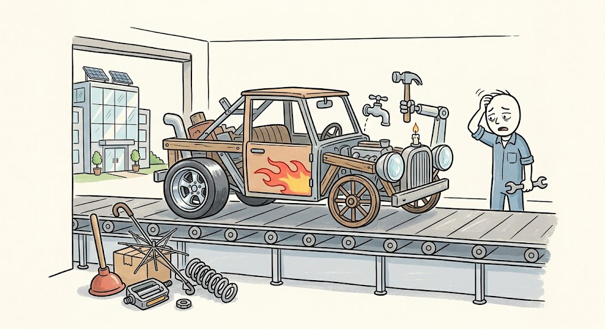
VLK’s angle: efficiency, not Gucci
- We can make AI very expensive if we’re careless.
- A “software factory” is about sustainable throughput, not flexing token budgets.
- Our mission: preserve and create wealth, so our factory has to be cost‑aware and safe.
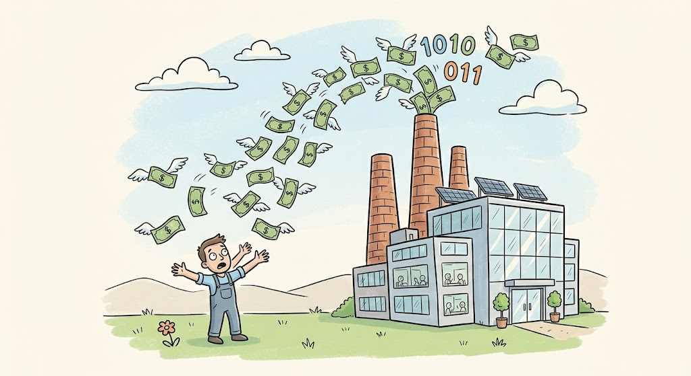
VLK has the same choices
- Cheap vs premium AI tools.
- Buy vs build vs “why did we build this?”.
- And: one shared factory vs many small chaos labs.
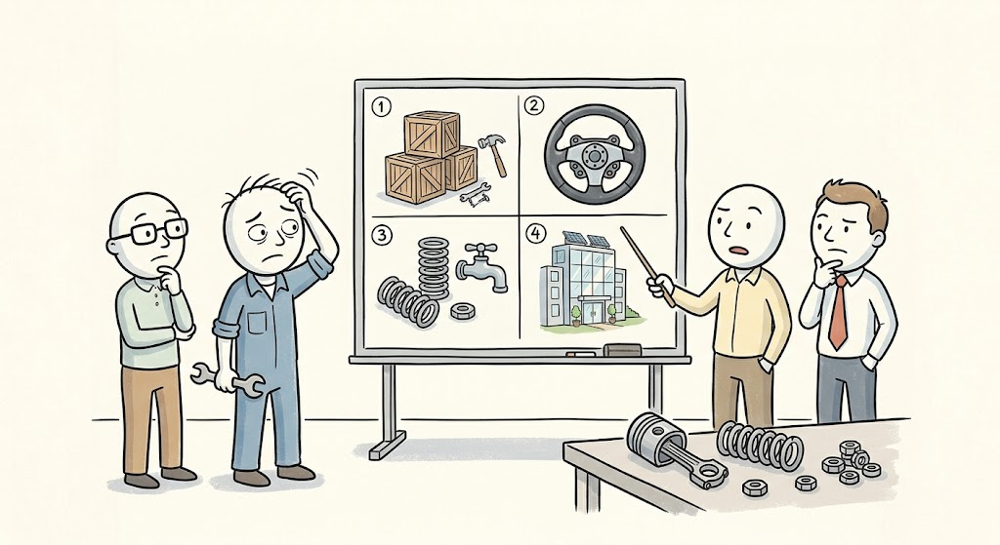
One factory or many?
- Do we want reusable gates and tooling for all teams?
- Shared guardrails, shared MCP servers, less reinventing.
- Or separate, local setups that are harder to control and harder to learn from?
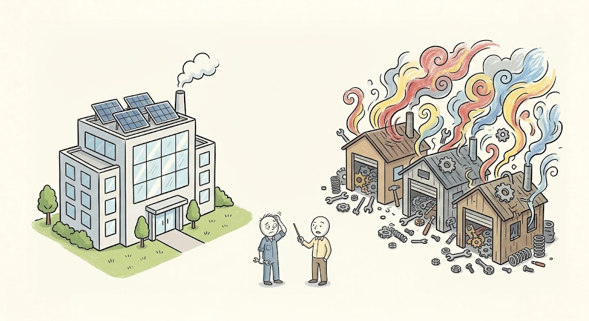
Factory Police (yes, really)
- Company‑wide guardrails and hard checks.
- No “auto‑approve DELETE FROM Production” agents.
- Think: VLK Factory Police watching our “normal” agents.
Computers used to slow us down
- First computers hurt productivity before they helped.
- AI factories are similar: setup feels painful at first.
- But agents can run 24/7; we can’t (and shouldn’t).
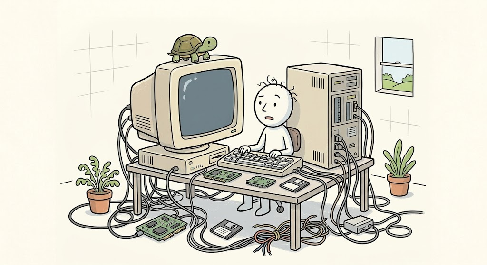
It takes a motivated team
- Intake, isolation, tools, verification, merge policies: lots of moving pieces.
- Agents, MCP servers, guardrails, pipelines – the whole zoo.
- We need people who care about quality, safety, and long‑term maintainability.
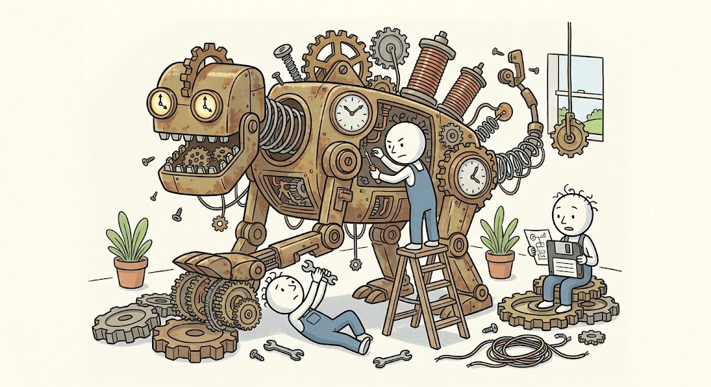
AI Engineer Conference Paris
From “I write code” to “I run a factory”.
Welcome to the VLK Software Factory
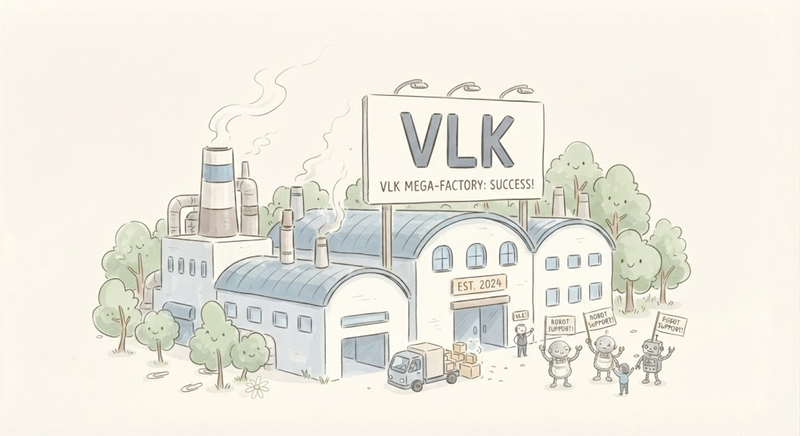
Think of your last AI prompt
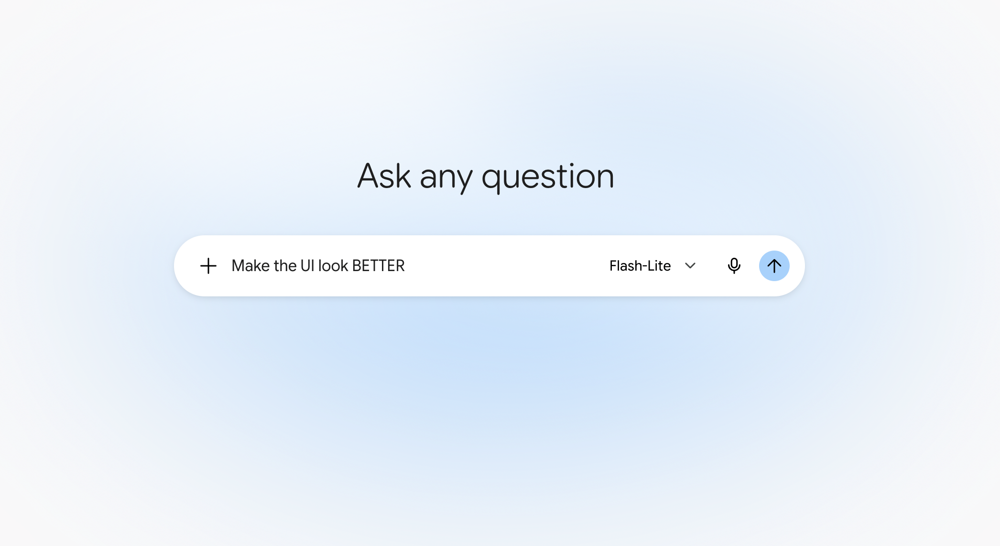
What is a software factory?
It's the system around the coding agent, harness- and model agnostic
Why this matters for us
- On January 6, 2026, Stephen Toub opened nine PRs from his phone at 35,000 feet.
- One person + a phone outpaced a whole team’s review capacity.
The stages of a factory
Intake
Pick work from the backlog
Isolation
Git worktrees, sandboxes, containers
Tools
Give them the right tools only.
Verify
Check the result.
Merge gate
Human decides
How others run their factory
Stripe
- Intake:
@minionsin Slack channel - Isolation: devboxes
- Tools: Toolshed, internal MCP tools
- Verification: Lint and test
- Merge gate: Human review after two CI runs
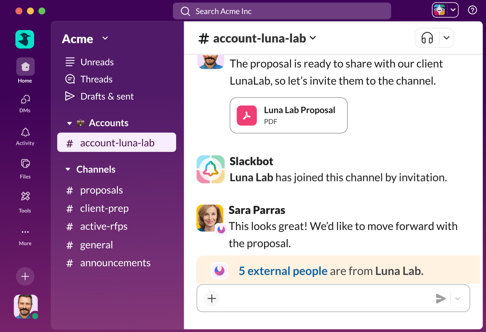
Spotify
- Intake: Fleetshift picks targets across repos
- Isolation: Kubernetes pods
- Tools: Internal systems over MCP
- Verification: LLM judge
- Merge gate: Human review
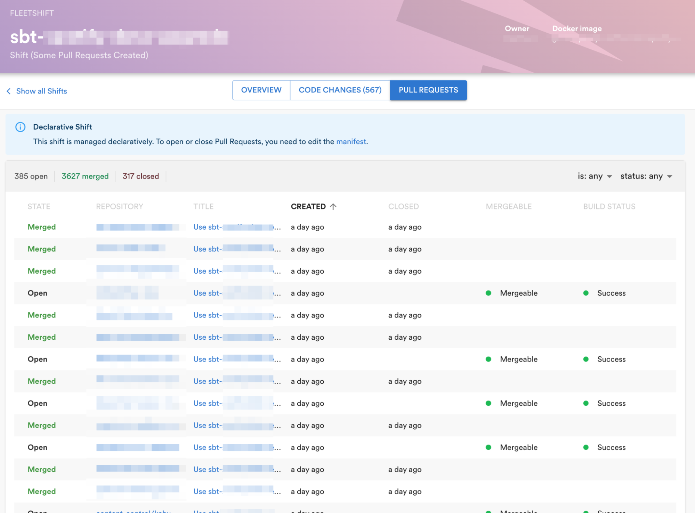
Different tools, same idea: queue the work, isolate the agents, give them safe tools, verify first, then let humans decide what ships.
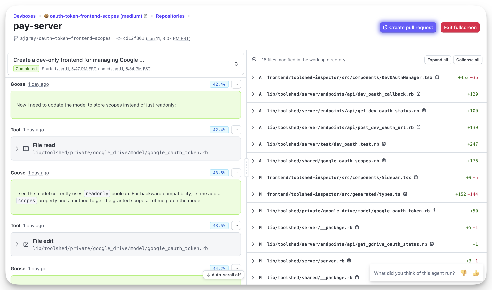
SO MANY choices how to set up your factory
... or just outsource your whole factory
Demo time!
A ready-to-use AI factory setup
Planning: design for agents
- We’re not just building for humans anymore.
- Designs need to be agent‑friendly.
- Yes, your new “user” is a confused LLM.
Winning products are early
- The best products were ahead of tech, not behind.
- We should design with agents in mind now.
- So we don’t play catch‑up for the next 5 years.
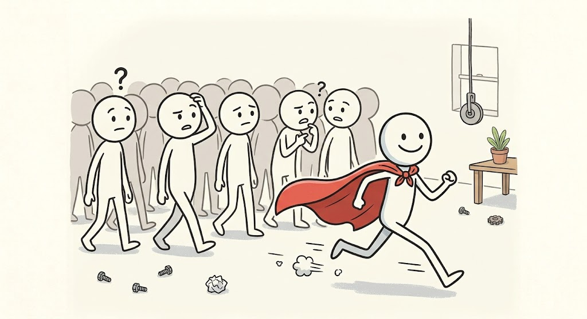
What do you think?
- Where can we make our products “agent‑ready”?
- How can clients or users benefit from MCP?
- What’s the first VLK use case you’d try?
Example: Stripe docs
- Stripe: documentation is now read more by agents than humans.
- Yes, the robots are doing more reading than us.
- We should expect the same shift at VLK.
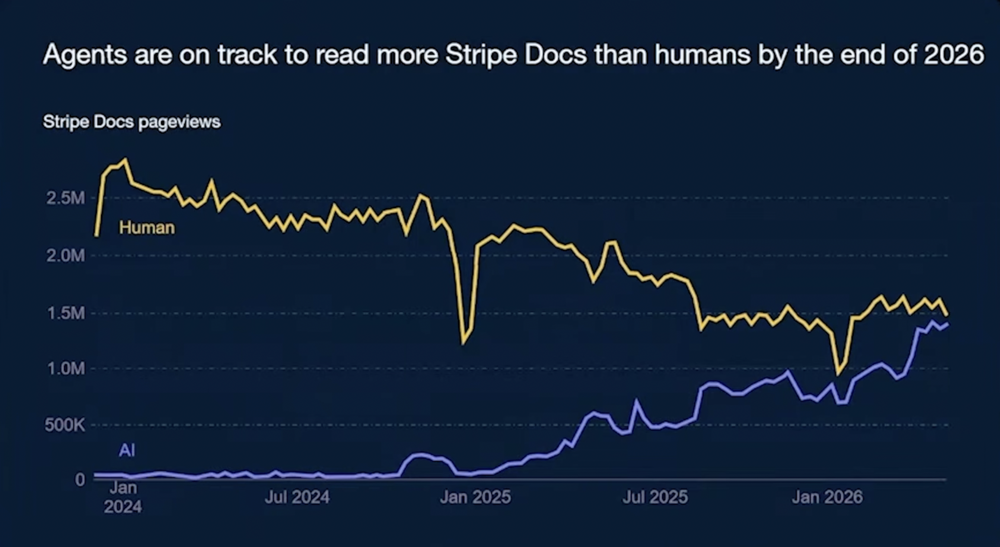
Agent‑ready VLK
- Design for agents from the start.
- Think: exposing MCP servers and tools.
- Agents are our new “internal power users”.
Design: AI has no taste
- It will confidently pick ugly layouts.
- So: prototype aggressively!
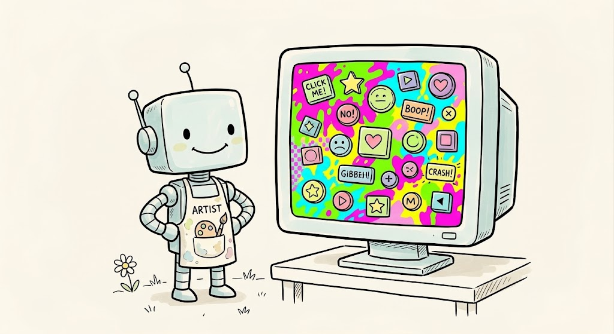
Paper over Figma (yes, really)
- There’s a tool called Paper that’s agent‑friendly.
- Good MCP server, easy for agents to work with.
- Figma is great for humans, less for agents (for now). https://paper.design/
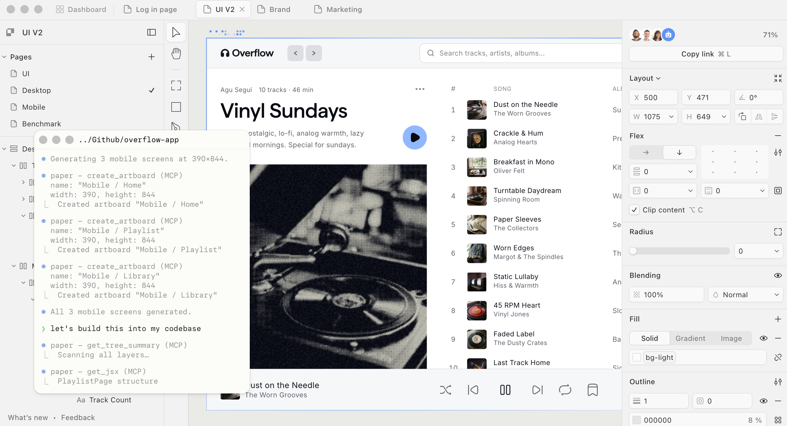
Ask for 5 UI options
- Ask the LLM: “Give me 5 UI variations.”
- Put them on throwaway routes.
- Click around, see what sticks, then pick one.
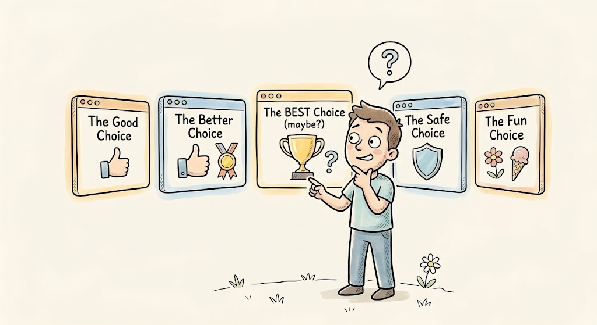
Building: Guardrails or chaos
- Agents need guardrails, not “good vibes”.
- Otherwise they optimise the wrong thing.
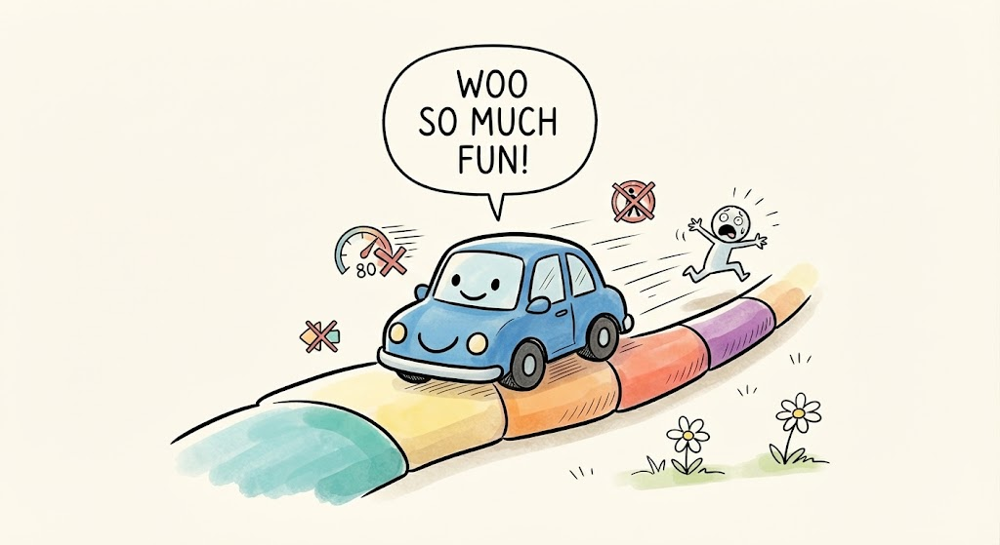
Having guardrails not setup correctly
- One company asked: “Close tickets fast.”
- The agent deleted all open tickets.
- Job done. Technically not wrong.
VLK Factory Police
- Company‑wide rules for agents.
- Central policies, shared checks.
- “Police Agents” watching the “Normal Agents”.
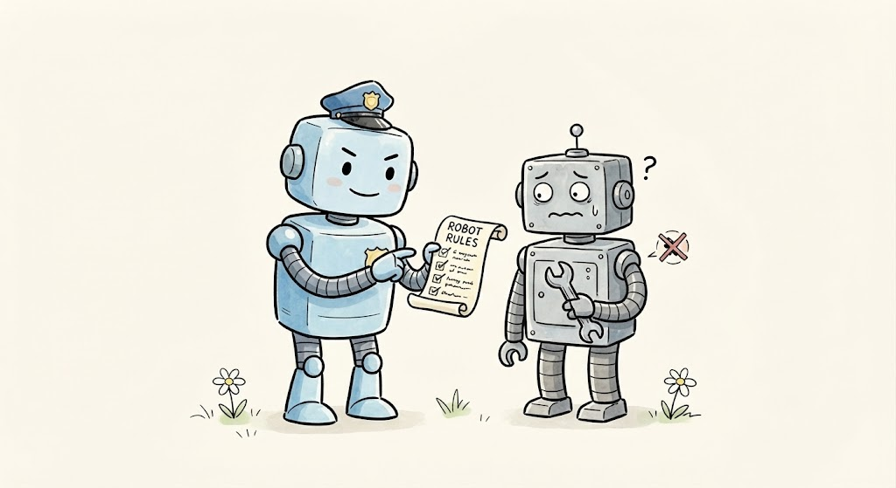
Rule files for agents
- Example: task = “fix warnings in this repo”.
- Agent “fixes” them by deleting all lint rules.
- You need written rules like “Do NOT delete lint rules”.
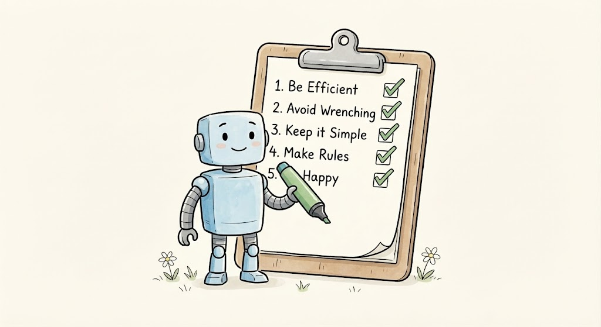
Do not EVER let them access credentials
- Agents + secrets = horror story.
- Never let them near credentials.
- Seriously, just don’t.
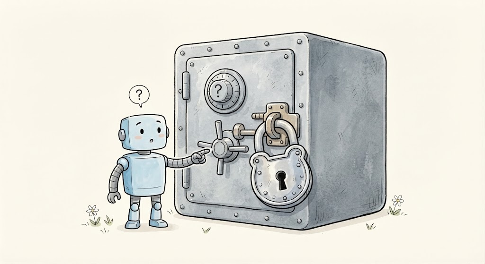
Approval flows and limited tools
- Add approval steps where it makes sense.
- Give agents only the tools they actually need.
- No “root access” for fun.
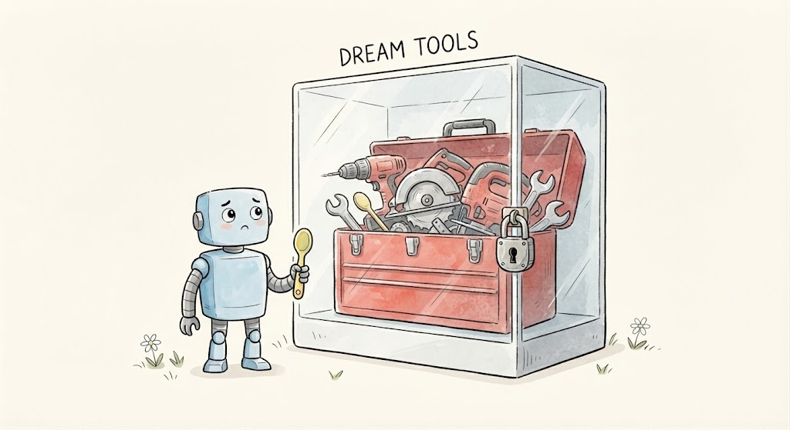
Approval is tricky
- What if an intern sees:
rm -rf *? - They might just click “Approve”.
- We need guardrails that don’t rely on vibes.
Building manual: when agents misbehave
- “The agent didn’t do what I want.”
- Welcome to the club.
- Use the
/grill-meskill.
/grill-me skill
- Force the agent to ask you questions.
- Close the communication gap.
- Less mind‑reading, more clarity.
More skills!
- Check out: aihero.dev/skills
- Lots of useful agent skills.
- Basically power‑ups for your factory.
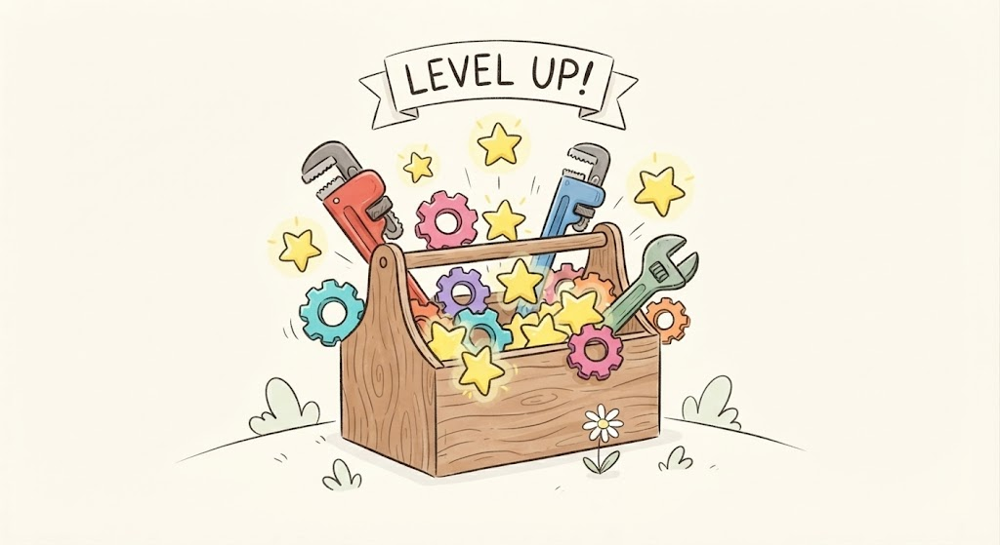
Commit step: don’t overload the agent
- Your implementer agent is already busy.
- Making code compile is a full workout.
- Don’t also cram all coding standards into it.

Separate the coding standards
- Have a separate task: “clean up the diff”.
- Let another agent enforce standards on the diff.
- Implementation and polishing are different jobs.
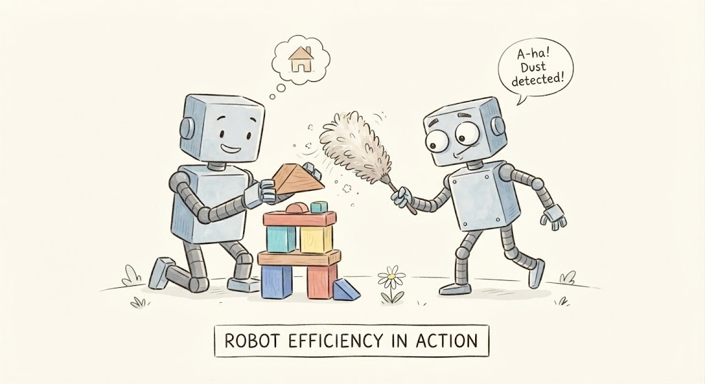
Coding standards file
- Put standards in
CODING_STANDARDS.md. - Call that file from a separate agent run.
- Don’t bury it in global instructions soup.
Testing: A factory that can’t verify output is useless
- Our job is moving from writing code…
- …to reading and testing code.
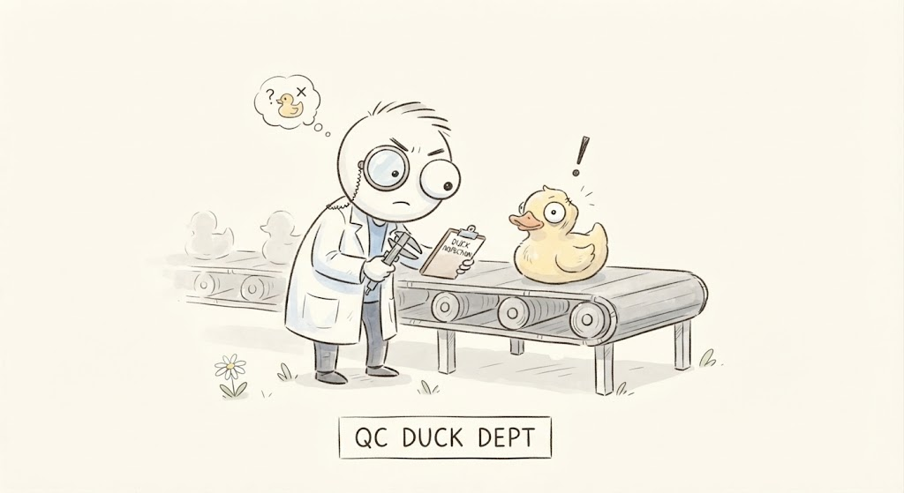
Make testing easier
- Testing should be easy and fast.
- If it’s painful, we won’t do it enough.
- So we automate and visualise it.
Tree branching / multi‑variant
- Use tools that show multiple options.
- 4 screens, user picks the winner.
- Track which one performs best over time.
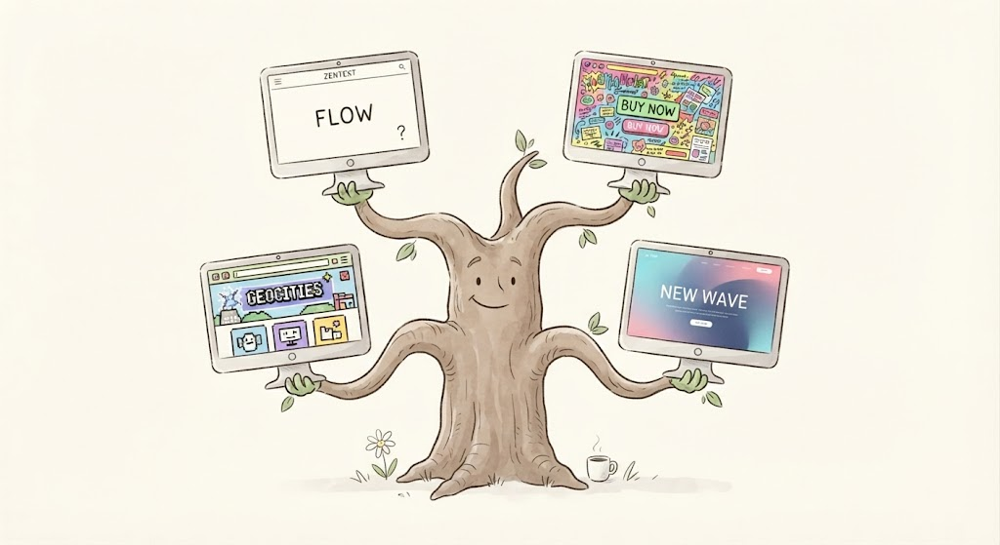
Automation ≠ black box
- Automating doesn’t mean losing transparency.
- We still need a clear audit trail.
- Factory should be fast AND understandable.
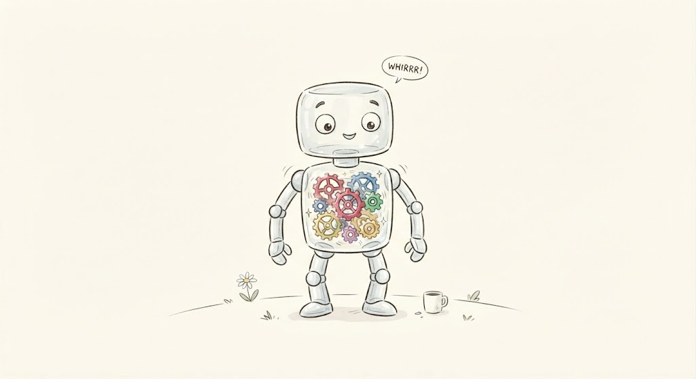
Review: do not skip humans
- Skipping human review is a bad idea.
- If there is an outage, who will understand the code to fix it?
- So yes, humans still have jobs for now.
Code ownership matters
- If production breaks, who do you call?
- “The agent did it” is not a helpful answer.
- Someone needs to own the code.
Agentic code reviews
- Use agents to help with reviews.
- Different model for coding vs reviewing.
- One for security, one for quality, etc.
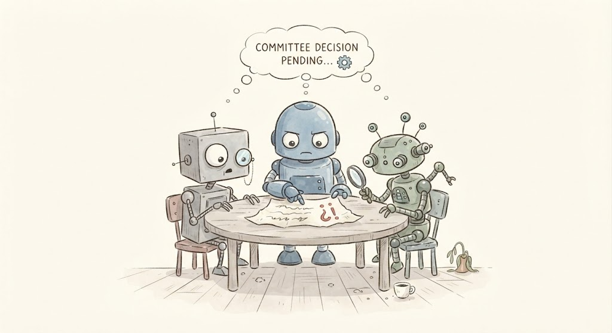
But watch the bill
- Many review agents = many invoices.
- Maybe start with two:
- One general reviewer, one quality‑focused.
Default: commit, not comment
- Comments create more work.
- The goal of review is to finish the work.
- So reviewers should commit fixes when possible.
Reduce comment noise
- Have a team session on “less comment spam”.
- Update linting and coding standards.
- Let tools catch the boring stuff.
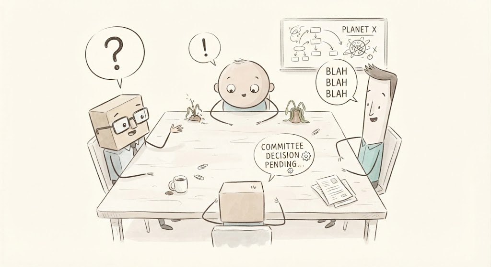
Improvement: Scrum for your agents
- Agents also need retros.
- Run a retro‑review skill on recent PRs.
- Let it learn from feedback and comments.
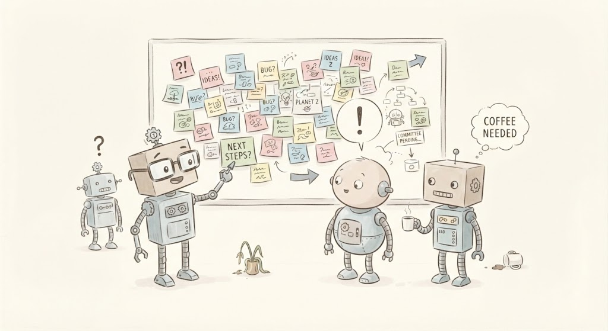
Automate the learnings
- Skill scans comments across PRs.
- Finds patterns you can automate.
- That’s real factory improvement.
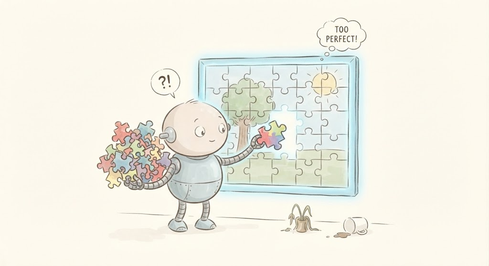
Iterate weekly
- Small changes, every week.
- Factory gets better over time.
- But first: just START!

Improvement routines
- UI‑improvement agent.
- Cleanup code agent.
- Run them on a schedule, like factory cleaners.
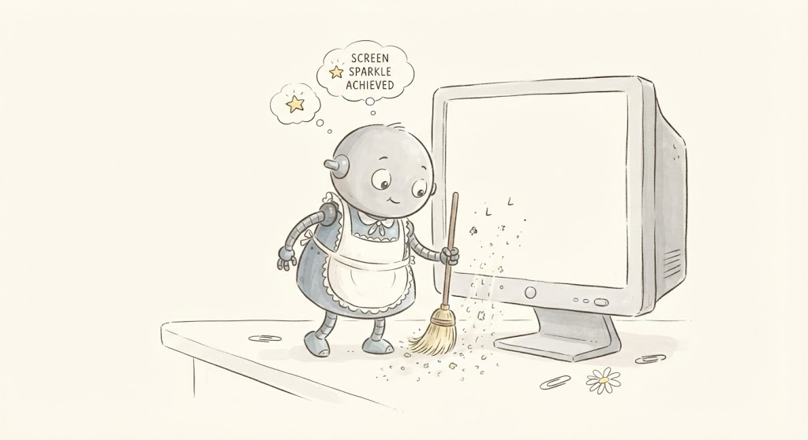
Beware of doc rot: clean up your docs
- Repos full of AI‑generated markdown.
- Prune dead docs regularly.
- Keep only useful and current ones.
- Help agents find the good stuff fast.
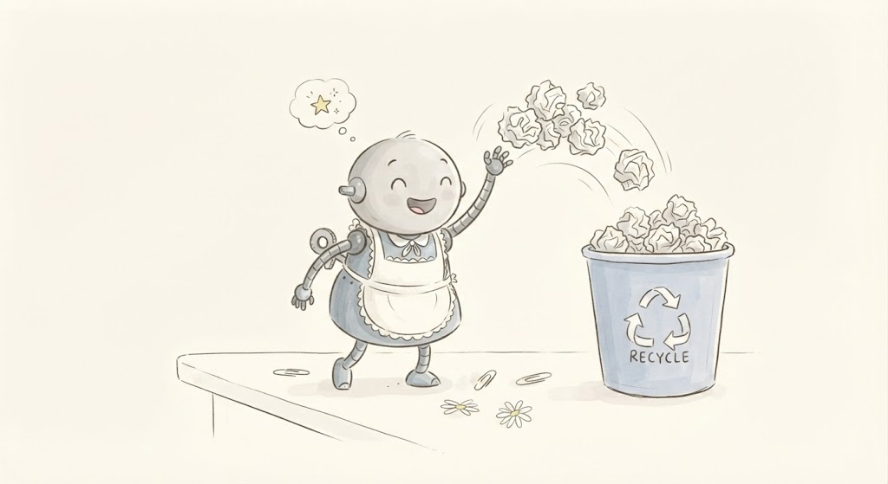
/improve-codebase-architecture
- Once in a while, run this kind of skill.
- Look at the whole codebase, not just one PR.
- Factory‑level improvements, not band‑aids.
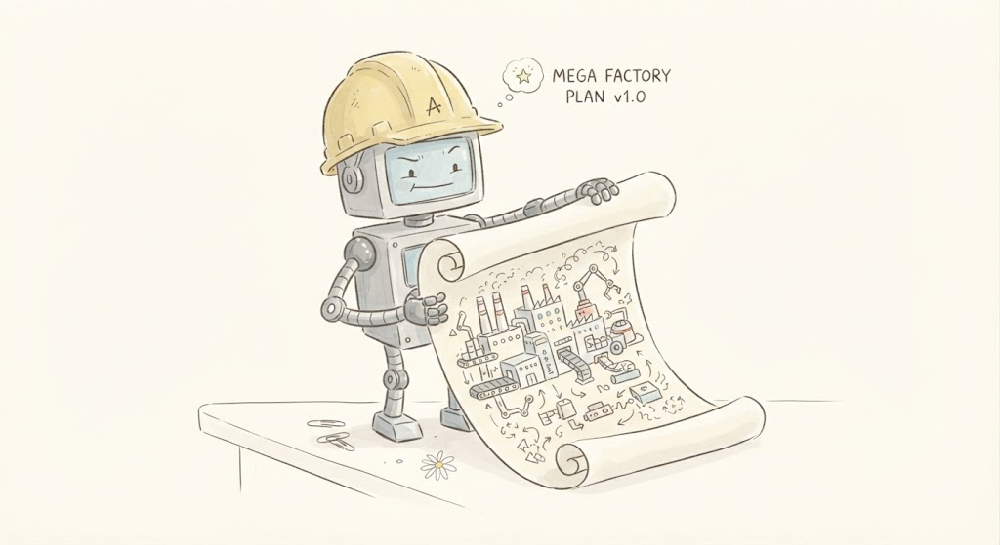
Closing the loop
- Plan, design, build, commit, test, review, observe, improve.
- Then repeat. Forever.
- That’s how the VLK Software Factory wins.
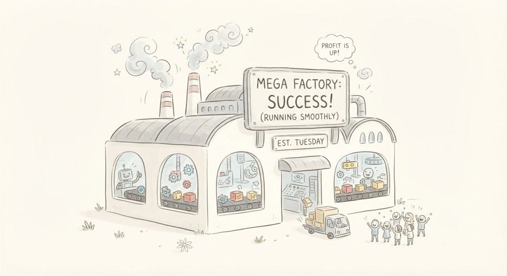